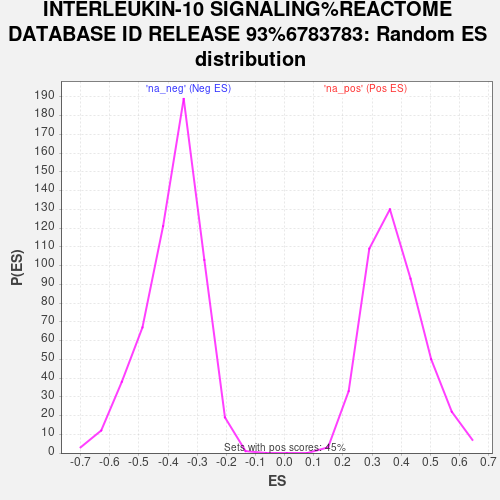

Profile of the Running ES Score & Positions of GeneSet Members on the Rank Ordered List
| Dataset | Combo_vs_Naive_Ranked_Genes |
| Phenotype | NoPhenotypeAvailable |
| Upregulated in class | na_pos |
| GeneSet | INTERLEUKIN-10 SIGNALING%REACTOME DATABASE ID RELEASE 93%6783783 |
| Enrichment Score (ES) | 0.7924372 |
| Normalized Enrichment Score (NES) | 2.0999138 |
| Nominal p-value | 0.0 |
| FDR q-value | 0.001283305 |
| FWER p-Value | 0.018 |
| SYMBOL | RANK IN GENE LIST | RANK METRIC SCORE | RUNNING ES | CORE ENRICHMENT | |
|---|---|---|---|---|---|
| 1 | ICAM1 | 16 | 30.690 | 0.1116 | Yes |
| 2 | CXCL8 | 53 | 26.441 | 0.2063 | Yes |
| 3 | TIMP1 | 94 | 24.535 | 0.2938 | Yes |
| 4 | LIF | 142 | 22.851 | 0.3747 | Yes |
| 5 | CSF1 | 478 | 16.831 | 0.4150 | Yes |
| 6 | IL1B | 506 | 16.473 | 0.4737 | Yes |
| 7 | TYK2 | 755 | 14.016 | 0.5093 | Yes |
| 8 | TNFRSF1B | 836 | 13.459 | 0.5535 | Yes |
| 9 | IL1R1 | 837 | 13.457 | 0.6029 | Yes |
| 10 | CXCL2 | 846 | 13.392 | 0.6516 | Yes |
| 11 | CCL2 | 997 | 12.286 | 0.6870 | Yes |
| 12 | IL1A | 1117 | 11.510 | 0.7217 | Yes |
| 13 | CXCL10 | 1284 | 10.574 | 0.7498 | Yes |
| 14 | IL6 | 1521 | 9.412 | 0.7693 | Yes |
| 15 | IL10RB | 1818 | 8.161 | 0.7802 | Yes |
| 16 | CCL20 | 2050 | 7.354 | 0.7924 | Yes |
| 17 | JAK1 | 4577 | 2.346 | 0.6392 | No |
| 18 | IL12A | 5932 | 1.062 | 0.5564 | No |
| 19 | PTGS2 | 8968 | -0.377 | 0.3633 | No |
| 20 | TNFRSF1A | 11522 | -3.257 | 0.2117 | No |
| 21 | STAT3 | 14721 | -13.990 | 0.0582 | No |
